Note de cadrage
Titre du document.
Une phrase qui dit ce que le document contient, pas ce qu'il promet.

Une phrase qui dit ce que le document contient, pas ce qu'il promet.
Une phrase d'accroche qui affirme le constat central.
Texte courant en SemiLight, mesure d'environ 65 à 75 caractères. Phrases courtes, verbes d'action, preuves chiffrées. Les séparateurs sont la virgule, les deux-points et les parenthèses, jamais le tiret cadratin.
Source et date du relevé, en légende.
L'exécution fait la différence. Nous allons de la réflexion jusqu'au résultat, pas seulement jusqu'à la recommandation.
| Phase | Durée | Livrable | Charge |
|---|---|---|---|
| 1 · Diagnostic | 4 semaines | Rapport et cartographie | 12 j |
| 2 · Cadrage | 3 semaines | Système de pilotage | 9 j |
| Total | 7 semaines | 21 j |
Charge exprimée en jours-consultant.
« Une citation courte, qui prouve un résultat plutôt qu'elle ne complimente. »
Genetrix · Abidjan, Côte d'Ivoire · info@genetrix.ci · www.genetrix.ci · +225 07 47 169 169